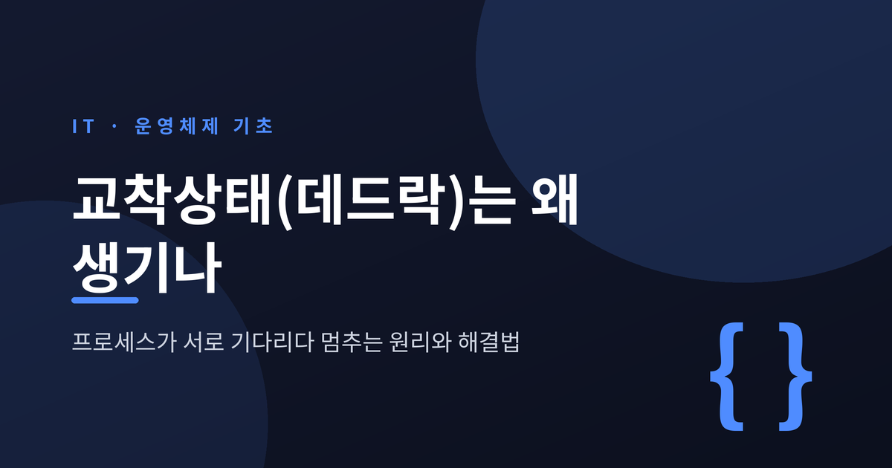
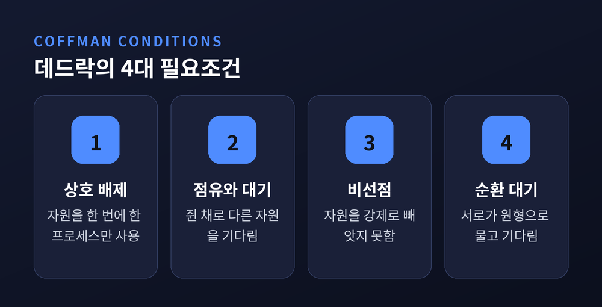
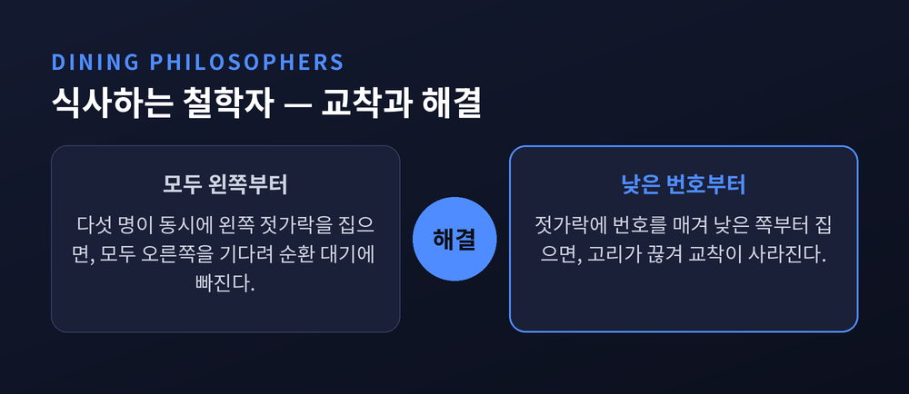
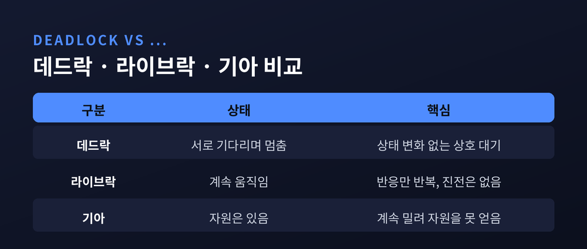
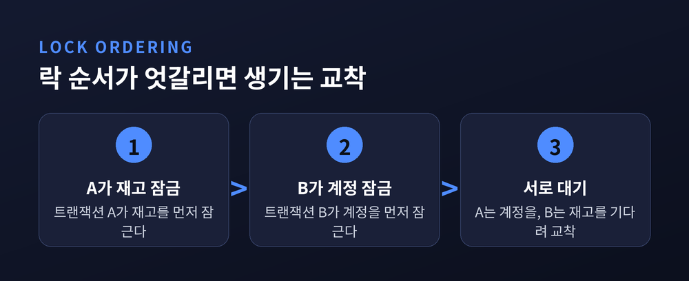
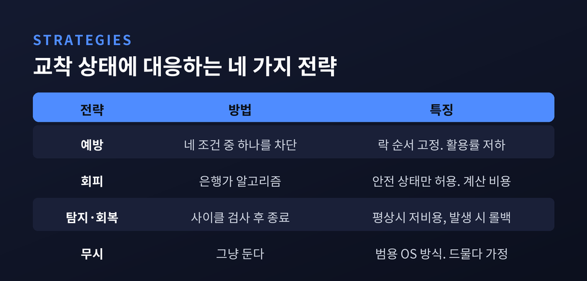

이번 글에서는 교착상태, 흔히 데드락이라 부르는 현상을 정리해 보겠습니다.
여러 프로세스가 서로가 쥔 자원을 기다리다 다 함께 멈춰 버리는 상황입니다.
원리부터 실제 사례, 그리고 푸는 방법까지 차례로 짚어 보겠습니다.
교착상태는 둘 이상의 프로세스가 서로 상대의 자원을 기다리며 영원히 멈춘 상태를 말합니다.
나는 상대가 쥔 것을 기다립니다. 그런데 그 상대도 내가 쥔 것을 기다립니다.
결국 아무도 앞으로 나아가지 못합니다.
좁은 다리 위에서 마주 온 두 차를 떠올리시면 쉽습니다. 서로 물러서지 않으면 둘 다 다리를 건너지 못합니다.
여기서 중요한 특징이 하나 있습니다. 교착에 빠진 프로세스는 상태 변화 자체가 없다는 점입니다.
바쁘게 무언가를 시도하는 것이 아니라, 그저 멈춰서 기다립니다. 이 '완전한 정지'가 뒤에서 다룰 라이브락·기아와 데드락을 가르는 기준이 됩니다.
데드락은 아무 때나 생기지 않습니다. 컴퓨터과학자 에드워드 코프만이 정리한 네 가지 조건이 동시에 갖춰질 때만 발생합니다.
이를 코프만 조건이라 부릅니다.
첫째, 상호 배제입니다. 자원을 한 번에 한 프로세스만 쓸 수 있어야 합니다. 프린터나 특정 메모리처럼 나눠 쓸 수 없는 자원이 그렇습니다.
둘째, 점유와 대기입니다. 이미 무언가를 쥔 채로 또 다른 자원을 기다리는 상태입니다.
셋째, 비선점입니다. 쥔 자원을 강제로 빼앗을 수 없고, 주인이 스스로 놓아줄 때까지 기다려야 합니다.
넷째, 순환 대기입니다. 프로세스들이 원형 사슬을 이뤄 각자 다음 사람이 쥔 자원을 기다립니다.

핵심은 이것입니다. 네 조건 중 하나라도 깨지면 데드락은 성립하지 않습니다.
특히 마지막 순환 대기가 완성되는 순간이 방아쇠입니다. 앞의 세 조건이 갖춰진 상태에서 고리가 닫히면, 그때 교착이 확정됩니다.
교착은 말로 풀면 헷갈리지만, 그림으로 그리면 한눈에 드러납니다.
프로세스를 동그라미로, 자원을 네모로 그립니다.
자원이 프로세스에 배정되면 자원에서 프로세스로 화살표를 긋습니다. 반대로 프로세스가 자원을 요청 중이면 프로세스에서 자원으로 화살표를 긋습니다.
이렇게 그린 그림을 자원 할당 그래프라 부릅니다.
여기서 규칙이 하나 나옵니다. 화살표를 따라가다 제자리로 돌아오는 방향 사이클이 생기면, 그 고리가 바로 순환 대기입니다.
특히 자원마다 인스턴스가 하나뿐이라면, 사이클이 있다는 말과 교착에 빠졌다는 말은 같은 뜻이 됩니다.
다만 자원이 여러 개일 때는 조금 다릅니다. 사이클이 있어도 교착이 아닐 수 있습니다. 이럴 때 사이클은 위험 신호일 뿐, 교착의 확정은 아닙니다.
순환 대기를 가장 잘 보여 주는 그림이 '식사하는 철학자 문제'입니다.
에츠허르 데이크스트라가 1965년에 제시한 고전적인 예시입니다.
원탁에 철학자 다섯이 앉아 있습니다. 사람과 사람 사이마다 젓가락이 하나씩, 모두 다섯 개가 놓여 있습니다.
밥을 먹으려면 양쪽 젓가락 두 개를 동시에 쥐어야 합니다.
이제 다섯 명이 동시에 왼쪽 젓가락을 집었다고 해 봅시다.
모두가 오른쪽 젓가락을 기다립니다. 그런데 내 오른쪽 젓가락은 옆 사람의 왼쪽 젓가락입니다.
다섯 개의 기다림이 완벽한 원을 그립니다. 아무도 두 번째 젓가락을 얻지 못하고, 식사는 영원히 시작되지 않습니다.

해법 하나는 의외로 단순합니다. 젓가락에 번호를 매기고, 항상 낮은 번호부터 집게 하는 것입니다.
이렇게 하면 가장 높은 번호 젓가락은 한 사람만 쥘 수 있어, 원형 고리가 끊어집니다.
자원에 순서를 부여해 순환 대기 조건을 깨는 방식입니다.
교착상태와 헷갈리는 두 가지가 있습니다. 라이브락과 기아입니다.
셋은 '진행하지 못한다'는 점만 같고, 속을 들여다보면 다릅니다.
라이브락은 멈춰 있지 않습니다. 계속 움직이지만 진전이 없습니다.
복도에서 마주친 두 사람이 서로 같은 쪽으로 자꾸 비켜서다 못 지나가는 상황을 떠올리시면 됩니다. 부지런히 반응하지만, 실질 진행은 0입니다.
기아는 또 다릅니다. 자원은 있는데, 특정 프로세스가 다른 프로세스들에 계속 밀려 자원을 얻지 못하는 상태입니다.

정리하면 이렇습니다. 데드락은 서로를 기다리며 멈춘 것, 라이브락은 진전 없이 바쁜 것, 기아는 무기한 밀려나는 것입니다.
예전에는 셋을 뭉뚱그려 '멈췄다'고만 여겼습니다. 지금은 원인이 다르니 처방도 달라야 한다는 점을 짚어 둡니다.
교착은 교과서 속 이야기만이 아닙니다. 데이터베이스와 멀티스레드 프로그램에서 자주 마주칩니다.
가장 흔한 원인은 락을 잠그는 순서가 엇갈리는 것입니다.
예를 들어 보겠습니다. 트랜잭션 A는 '재고'를 먼저 잠그고 '계정'을 잠그려 합니다. 트랜잭션 B는 '계정'을 먼저 잠그고 '재고'를 잠그려 합니다.
부하가 몰리면 A는 계정을, B는 재고를 서로 기다리며 교착에 빠집니다.

다행히 MySQL의 InnoDB 같은 데이터베이스는 이런 상황을 스스로 감지합니다.
데드락 탐지가 기본으로 켜져 있어, 교착을 발견하면 둘 중 한 트랜잭션을 자동으로 롤백해 고리를 풉니다.
마지막 데드락 내역은 명령 한 줄로 확인할 수 있습니다.
실무의 정석은 예방입니다. 모든 트랜잭션과 스레드가 락을 항상 같은 순서로 잡도록 규칙을 통일하면, 순환 대기가 아예 생기지 않습니다.
교착에 대응하는 길은 크게 네 가지입니다.
첫째, 예방입니다. 네 조건 중 하나를 아예 못 만들게 막습니다. 락 순서를 전역으로 고정하는 방법이 대표적입니다.
둘째, 회피입니다. 데이크스트라의 은행가 알고리즘이 여기 속합니다. 자원을 내주기 전에, 그래도 시스템이 '안전 상태'에 머무는지 계산하고 안전할 때만 할당합니다.
다만 각 프로세스가 최대 얼마를 쓸지 미리 알려야 하고, 요청마다 계산 비용이 커서 범용 환경에서는 잘 쓰이지 않습니다.
셋째, 탐지와 회복입니다. 자원 할당 그래프에 사이클이 생겼는지 주기적으로 검사하고, 발견되면 프로세스를 종료하거나 자원을 되돌려 고리를 끊습니다.

넷째, 무시입니다. 조금 뜻밖일 수 있습니다.
윈도우와 리눅스 같은 범용 운영체제는 데드락을 적극적으로 막지 않습니다. 드물게 일어나는 일을 상시로 감시하는 비용이 더 크다고 보기 때문입니다.
대신 데이터베이스나 실시간 시스템처럼 신뢰성이 중요한 곳에서는 탐지와 회피를 실제로 구현합니다.
완벽한 정답은 없습니다. 자원 활용률을 지킬지, 안전을 택할지에 따라 전략이 갈릴 뿐입니다.
결국 남는 것은 하나입니다.
데드락은 네 조건이 동시에 맞물릴 때만 생기고, 그중 하나만 끊어도 풀린다는 사실입니다.
"고리를 만들지 않으면, 갇힐 일도 없습니다."
여러 프로세스가 서로를 붙잡고 멈추는 모습은 결국 순서의 문제입니다. 누가 무엇을 먼저 쥐느냐를 정해 두는 것만으로도, 멈춤은 대개 비켜 갑니다.